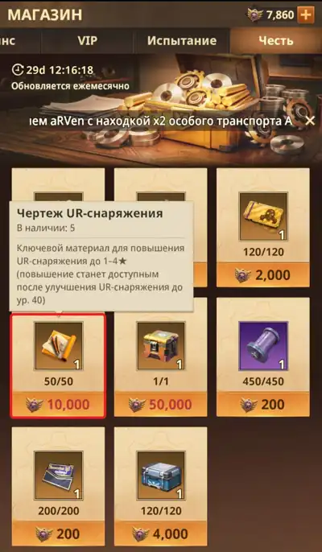

Гайды
Нажми на раздел, чтобы раскрыть.
Новичкам
📅 Ежедневная рутина (15–20 минут)
- Забрать ежедневные награды.
- Выполнить ежедневные задания — дают билеты, фрагменты, опыт, валюту.
- Проверить активные события и накопительные награды.
🗓️ Хотя бы раз в неделю (чтобы не отставать)
- Проверяй магазин альянса и другие магазины. Там часто бывают осколки нужных героев, ускорения и расходники, которые сложно получить в боях.
- Участвуй в накопительных ивентах. Даже небольшие ежедневные вклады дают хорошие итоговые награды.
Следи за расписанием крупных событий (VS, Пандора и т. п.). За пару дней до них не трать ускорения и редкие бафы — копи их под ивенты!
🛡️ Как ставить отряд (базовая сборка)
| Позиция | Роль |
|---|---|
| Танк — 1 линия, впереди | Держит урон, защищает остальных. |
| Дамагер — 2 линия, сзади | Основной источник урона. |
| Саппорт / контроллер — сзади или сбоку | Лечение, бафы или контроль толпы. |
Что прокачивать в первую очередь:
- Один отряд и самых ключевых героев — не распыляйся на всех.
- Основное оружие и бойца (истребитель).
⚔️ Кто кого контрит
| Отряд | Контрит |
|---|---|
| Тактики | Воинов |
| Штурмовики | Тактиков |
В будущем хорошо иметь все три отряда — воинов, тактиков и штурмовиков. Но это уже далёкое будущее: сначала качаем один основной отряд.
⭐ Классический отряд №1 и порядок прокачки
Состав: Арнольд, Зара или Токсина (обе — сильные танки одного уровня), Нора, Монро, Ария.
- Вкладываемся в Арнольда до 4 ⭐.
- Все золотые фрагменты — в Монро, минимум 4 ⭐.
- Снаряжение: танкам сначала шлем, потом бронежилет; стрелкам сначала оружие, потом прицел.
- Главный акцент — Монро и Арнольд:
- качаем оружие Монро до 40 ур.;
- потом шлем Арнольда до 40 ур.;
- мастерскую снаряжения — до 20 ур., чтобы качать звёзды оружию.
- Фиолетовый шмот не качаем и не улучшаем — перерабатываем его в мастерской и крафтим на него золотой шмот.
- В магазине Чести покупаем только чертёж UR-снаряжения и качаем им звёзды ⭐.

🔍 На что смотреть при прокачке
- Звёзды и ключевые навыки. У многих героев сильные эффекты открываются только с 4–5 ⭐ (например, массовый контроль или щит на весь отряд). Лучше довести 2–3 героев до такого порога, чем иметь 6–7 «полуготовых».
- Бонус фракции. Если собрать 3+ героев одной фракции, отряд получает +5–15% к атаке/защите/здоровью. Это заметно на сложных этапах — держи хотя бы 3 героев одной фракции в основном отряде.
- Приоритет улучшений: сначала уровень героя → потом истребитель → потом экипировка. Не гони экипировку, пока сам герой слабый — эффект будет мизерным.
Другие гайды скоро.